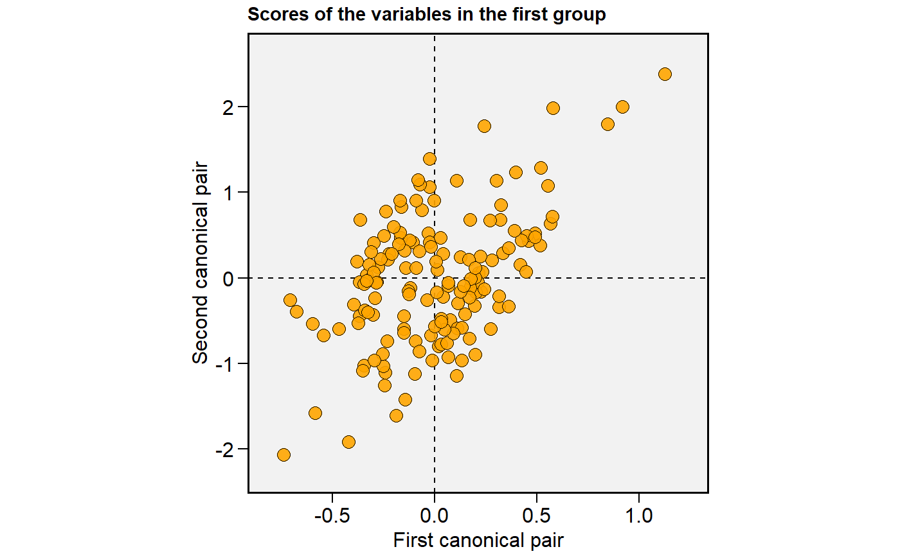
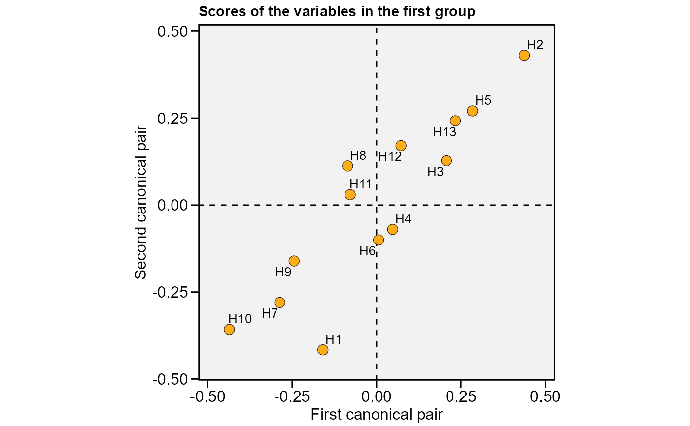

Graphs of the Canonical Correlation Analysis
# S3 method for can_cor plot( x, type = 1, plot_theme = theme_metan(), size.tex.lab = 12, size.tex.pa = 3.5, x.lab = NULL, x.lim = NULL, x.breaks = waiver(), y.lab = NULL, y.lim = NULL, y.breaks = waiver(), axis.expand = 1.1, shape = 21, col.shape = "orange", col.alpha = 0.9, size.shape = 3.5, size.bor.tick = 0.3, labels = FALSE, main = NULL, ... )
| x | The |
|---|---|
| type | The type of the plot. Defaults to |
| plot_theme | The graphical theme of the plot. Default is
|
| size.tex.lab | The size of the text in axis text and labels. |
| size.tex.pa | The size of the text of the plot area. Default is
|
| x.lab | The label of x-axis. Each plot has a default value. New
arguments can be inserted as |
| x.lim | The range of x-axis. Default is |
| x.breaks | The breaks to be plotted in the x-axis. Default is
|
| y.lab | The label of y-axis. Each plot has a default value. New
arguments can be inserted as |
| y.lim | The range of y-axis. Default is |
| y.breaks | The breaks to be plotted in the x-axis. Default is
|
| axis.expand | Multiplication factor to expand the axis limits by to
enable fitting of labels. Default is |
| shape | The shape of points in the plot. Default is |
| col.shape | A vector of length 2 that contains the color of shapes for
genotypes above and below of the mean, respectively. Defaults to
|
| col.alpha | The alpha value for the color. Default is |
| size.shape | The size of the shape in the plot. Default is |
| size.bor.tick | The size of tick of shape. Default is |
| labels | Logical arguments. If |
| main | The title of the plot. Defaults to |
| ... | Currently not used. |
An object of class gg, ggplot.
Tiago Olivoto tiagoolivoto@gmail.com
# \donttest{ library(metan) cc1 = can_corr(data_ge2, FG = c(PH, EH, EP), SG = c(EL, ED, CL, CD, CW, KW, NR))#> --------------------------------------------------------------------------- #> Matrix (correlation/covariance) between variables of first group (FG) #> --------------------------------------------------------------------------- #> PH EH EP #> PH 1.0000000 0.9318282 0.6384123 #> EH 0.9318282 1.0000000 0.8695460 #> EP 0.6384123 0.8695460 1.0000000 #> --------------------------------------------------------------------------- #> Collinearity within first group #> --------------------------------------------------------------------------- #> The multicollinearity in the matrix should be investigated. #> CN = 977.586 #> Largest VIF = 229.164618380199 #> Matrix determinant: 0.0025852 #> Largest correlation: PH x EH = 0.932 #> Smallest correlation: PH x EP = 0.638 #> Number of VIFs > 10: 3 #> Number of correlations with r >= |0.8|: 2 #> Variables with largest weight in the last eigenvalues: #> EH > PH > EP #> --------------------------------------------------------------------------- #> Matrix (correlation/covariance) between variables of second group (SG) #> --------------------------------------------------------------------------- #> EL ED CL CD CW KW NR #> EL 1.00000000 0.3851451 0.2554068 0.91186526 0.4581728 0.6685601 -0.01387378 #> ED 0.38514512 1.0000000 0.6974629 0.38971282 0.7371305 0.8241426 0.55253448 #> CL 0.25540676 0.6974629 1.0000000 0.30036364 0.7383379 0.4709310 0.26193592 #> CD 0.91186526 0.3897128 0.3003636 1.00000000 0.4840299 0.6259806 -0.03584984 #> CW 0.45817278 0.7371305 0.7383379 0.48402989 1.0000000 0.7348622 0.16565752 #> KW 0.66856012 0.8241426 0.4709310 0.62598062 0.7348622 1.0000000 0.36214470 #> NR -0.01387378 0.5525345 0.2619359 -0.03584984 0.1656575 0.3621447 1.00000000 #> --------------------------------------------------------------------------- #> Collinearity within second group #> --------------------------------------------------------------------------- #> Weak multicollinearity in the matrix #> CN = 68.376 #> Matrix determinant: 0.0015322 #> Largest correlation: EL x CD = 0.912 #> Smallest correlation: EL x NR = -0.014 #> Number of VIFs > 10: 0 #> Number of correlations with r >= |0.8|: 2 #> Variables with largest weight in the last eigenvalues: #> KW > ED > EL > CD > CL > CW > NR #> --------------------------------------------------------------------------- #> Matrix (correlation/covariance) between FG and SG #> --------------------------------------------------------------------------- #> EL ED CL CD CW KW NR #> PH 0.3801960 0.6613148 0.3251648 0.3153910 0.5047388 0.7534439 0.3286065 #> EH 0.3626537 0.6302561 0.3971935 0.2805118 0.5193136 0.7029469 0.2648051 #> EP 0.2634237 0.4580196 0.3908239 0.1750448 0.4248098 0.4974193 0.1404315 #> --------------------------------------------------------------------------- #> Correlation of the canonical pairs and hypothesis testing #> --------------------------------------------------------------------------- #> Var Percent Sum Corr Lambda Chisq DF p_val #> U1V1 0.6315391 76.189861 76.18986 0.7946943 0.29647 181.76246 21 0.00000 #> U2V2 0.1867300 22.527394 98.71725 0.4321226 0.80462 32.49857 12 0.00116 #> U3V3 0.0106327 1.282745 100.00000 0.1031150 0.98937 1.59810 5 0.90148 #> --------------------------------------------------------------------------- #> Canonical coefficients of the first group #> --------------------------------------------------------------------------- #> U1 U2 U3 #> PH 2.526492 5.866685 7.317151 #> EH -2.436372 -8.263008 -12.447948 #> EP 1.144533 2.747079 6.487414 #> --------------------------------------------------------------------------- #> Canonical coefficients of the second group #> --------------------------------------------------------------------------- #> V1 V2 V3 #> EL -0.00892526 -0.9360837 0.7670684 #> ED 0.19371881 0.2969851 -1.8240876 #> CL -0.08385387 -1.2150642 0.1719827 #> CD -0.30662013 1.1369520 -1.4230311 #> CW -0.15225785 0.1913916 0.4777071 #> KW 1.16752245 -0.1255657 1.1247216 #> NR -0.05865868 0.4861885 0.6223953 #> --------------------------------------------------------------------------- #> Canonical loads of the first group #> --------------------------------------------------------------------------- #> U1 U2 U3 #> PH 0.9868962 -0.07924975 -0.14055369 #> EH 0.9131089 -0.40755395 0.01148369 #> EP 0.6389394 -0.69262240 0.33470980 #> --------------------------------------------------------------------------- #> Canonical loads of the second group #> --------------------------------------------------------------------------- #> V1 V2 V3 #> EL 0.4762839 -0.09829294 -0.22697572 #> ED 0.8298627 -0.16168789 -0.34031848 #> CL 0.3789207 -0.69598199 -0.28635983 #> CD 0.3948013 0.03075542 -0.46981539 #> CW 0.6243739 -0.37712156 -0.14762207 #> KW 0.9566482 -0.05042023 -0.09910729 #> NR 0.4351188 0.29047403 0.18639351cc2 <- data_ge2 %>% means_by(GEN) %>% column_to_rownames("GEN") %>% can_corr(FG = c(PH, EH, EP), SG = c(EL, ED, CL, CD, CW, KW, NR))#> --------------------------------------------------------------------------- #> Matrix (correlation/covariance) between variables of first group (FG) #> --------------------------------------------------------------------------- #> PH EH EP #> PH 1.0000000 0.9189173 0.3939778 #> EH 0.9189173 1.0000000 0.7192828 #> EP 0.3939778 0.7192828 1.0000000 #> --------------------------------------------------------------------------- #> Collinearity within first group #> --------------------------------------------------------------------------- #> The multicollinearity in the matrix should be investigated. #> CN = 919.528 #> Largest VIF = 221.547716810886 #> Matrix determinant: 0.0038131 #> Largest correlation: PH x EH = 0.919 #> Smallest correlation: PH x EP = 0.394 #> Number of VIFs > 10: 3 #> Number of correlations with r >= |0.8|: 1 #> Variables with largest weight in the last eigenvalues: #> EH > PH > EP #> --------------------------------------------------------------------------- #> Matrix (correlation/covariance) between variables of second group (SG) #> --------------------------------------------------------------------------- #> EL ED CL CD CW KW NR #> EL 1.00000000 0.4010411 0.5131577 0.9377211 0.6957997 0.6563793 -0.07225443 #> ED 0.40104108 1.0000000 0.8486848 0.3152407 0.7881641 0.8950824 0.69413451 #> CL 0.51315772 0.8486848 1.0000000 0.4256584 0.8716229 0.7125578 0.58994313 #> CD 0.93772107 0.3152407 0.4256584 1.0000000 0.6238673 0.5902949 -0.18145262 #> CW 0.69579970 0.7881641 0.8716229 0.6238673 1.0000000 0.8535102 0.50440841 #> KW 0.65637931 0.8950824 0.7125578 0.5902949 0.8535102 1.0000000 0.46907822 #> NR -0.07225443 0.6941345 0.5899431 -0.1814526 0.5044084 0.4690782 1.00000000 #> --------------------------------------------------------------------------- #> Collinearity within second group #> --------------------------------------------------------------------------- #> Severe multicollinearity in the matrix! Pay attention on the variables listed bellow #> CN = 1552.123 #> Matrix determinant: 7.9e-06 #> Largest correlation: EL x CD = 0.938 #> Smallest correlation: EL x NR = -0.072 #> Number of VIFs > 10: 6 #> Number of correlations with r >= |0.8|: 5 #> Variables with largest weight in the last eigenvalues: #> ED > KW > CL > CW > EL > NR > CD #> --------------------------------------------------------------------------- #> Matrix (correlation/covariance) between FG and SG #> --------------------------------------------------------------------------- #> EL ED CL CD CW KW NR #> PH 0.2290182 0.7918292 0.5262760 0.2345645 0.6530199 0.8224189 0.45295974 #> EH 0.3025919 0.7768116 0.6219269 0.2729626 0.6736994 0.7936528 0.33082529 #> EP 0.3682229 0.4971223 0.5993264 0.2888874 0.4874277 0.4732954 0.04794453 #> --------------------------------------------------------------------------- #> Correlation of the canonical pairs and hypothesis testing #> --------------------------------------------------------------------------- #> Var Percent Sum Corr Lambda Chisq DF p_val #> U1V1 0.9718658 41.47197 41.47197 0.9858325 0.00218 39.83935 21 0.00778 #> U2V2 0.8317335 35.49217 76.96414 0.9119942 0.07743 16.62936 12 0.16408 #> U3V3 0.5398289 23.03586 100.00000 0.7347305 0.46017 5.04502 5 0.41041 #> --------------------------------------------------------------------------- #> Canonical coefficients of the first group #> --------------------------------------------------------------------------- #> U1 U2 U3 #> PH 5.773517 6.359457 7.266106 #> EH -6.410034 -8.561079 -10.352155 #> EP 2.560042 2.837721 5.118397 #> --------------------------------------------------------------------------- #> Canonical coefficients of the second group #> --------------------------------------------------------------------------- #> V1 V2 V3 #> EL -0.59514582 0.8165268 0.7660462 #> ED 2.24335840 4.5202765 -1.7746076 #> CL -1.60643643 -3.6532159 2.6019702 #> CD 0.81059969 1.4810578 0.1877906 #> CW 1.11115714 1.4920125 -2.5251980 #> KW -1.03618614 -4.8770282 1.2249614 #> NR 0.04635339 1.0825779 0.6376536 #> --------------------------------------------------------------------------- #> Canonical loads of the first group #> --------------------------------------------------------------------------- #> U1 U2 U3 #> PH 0.8918261 -0.3894677 -0.230132932 #> EH 0.7367446 -0.6761412 0.006369758 #> EP 0.2240527 -0.8146310 0.534954830 #> --------------------------------------------------------------------------- #> Canonical loads of the second group #> --------------------------------------------------------------------------- #> V1 V2 V3 #> EL 0.3299566 -0.09777307 0.5666060 #> ED 0.8773340 -0.22373844 0.3488486 #> CL 0.5946161 -0.30352692 0.6169395 #> CD 0.3490720 -0.02781792 0.4862462 #> CW 0.7096748 -0.25390402 0.3613829 #> KW 0.8851044 -0.24266216 0.2480914 #> NR 0.6261809 0.20220468 0.1522980# }